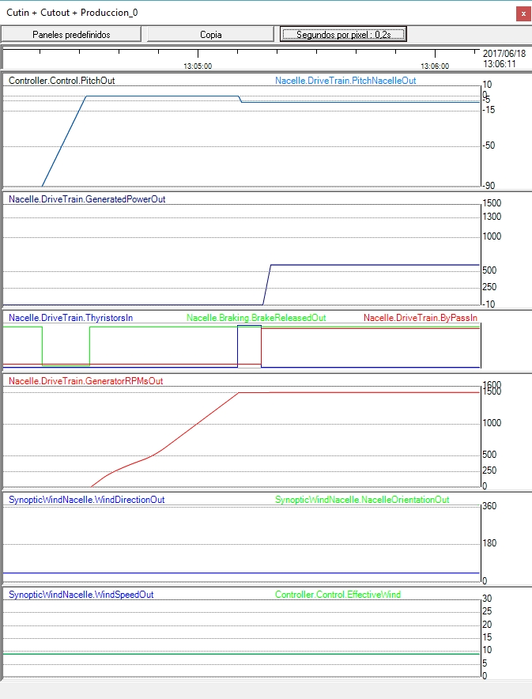
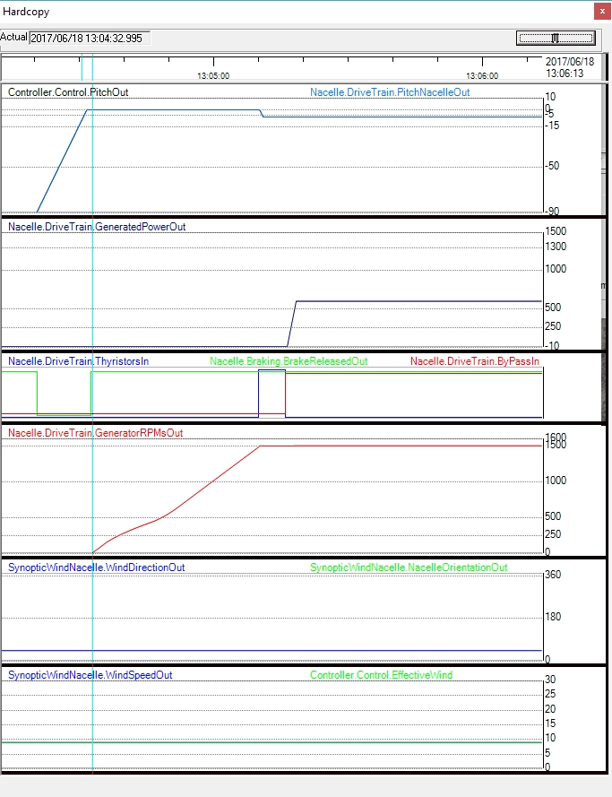
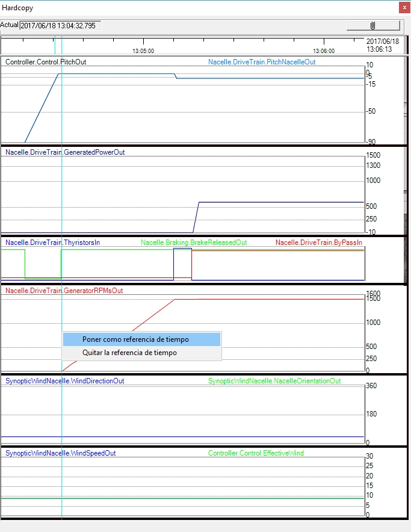
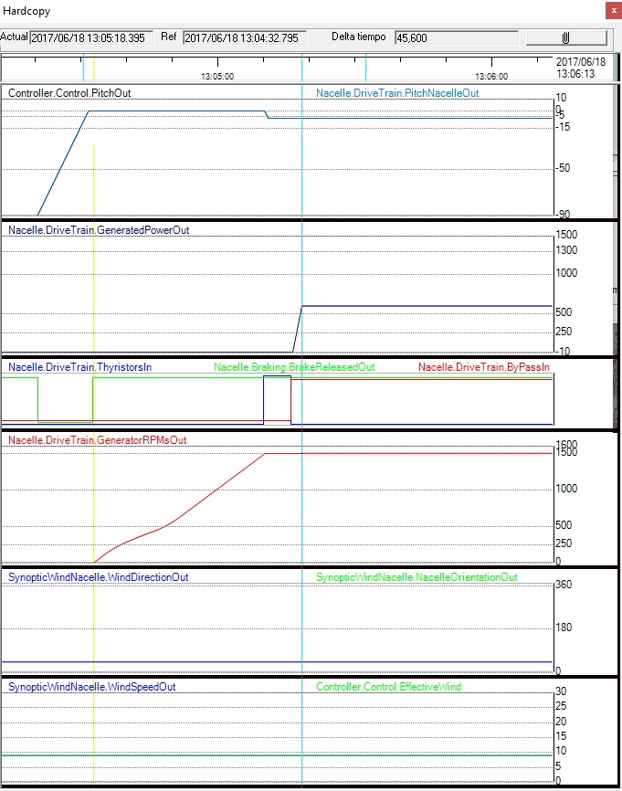

Objectivo:Analisar como o momento de inércia do sistema afeta a aceleração e desaceleração do rotor.
O que observar:Evolução da velocidade do rotor em resposta a mudanças no vento ou setpoints.
O que observar:Tempo de resposta, suavidade da transição e presença de oscilações.
□ Compare cenários com diferentes momentos de inércia mantendo constantes outras variáveis.
Nesta prática, exploramos o conceito de "momento de inércia" e experimentar mudanças em seu valor.
O conceito físico de "momento de inércia" aplica-se agirandosistemas mecânicos e análogos a ¿massa¿ em sistemas mecânicos móveis. Tem a ver com a resistência à mudança na velocidade rotacional de uma massa que gira em torno de um eixo.
No caso de uma turbina eólica, o conjunto do trem de potência é a parte com o momento mais alto de inércia, principalmente devido às lâminas (que pesam toneladas). Pode mudar devido a uma mudança no modelo da lâmina, ou devido a outros eventos, como depósitos de gelo nas lâminas.
Neste exercício, veremos a influência do momento de valor de inércia no tempo que leva para a turbina eólica alcançar o recorte. Para isso, realizaremos experimentos alterando esse valor usando o "Nacelle.DriveTrainMomentOfInertia" parâmetro. Acessar o "Parâmetros" tela.

Fig. 1.
Experiência 1 - Com o valor padrão.
1. Certifique-se de que a turbina eólica está desconectada da grade.
2. Definir uma velocidade moderada do vento (por exemplo, 9 m/s).
3. Mostrar um gravador com o painel "Cortar + Cortar + Produção" (verComo exibir um gravador e escolher um painel predefinido nele).Definir
4. Certifique-se de que não haja incidentes abertos, exceto para "Manual Stop".
5. Pressione "START". Você verá uma progressão semelhante à mostrada na figura seguinte.



Fig. 3.
6. Observe que, neste caso, o tempo decorrido é de 45,6 segundos.
Experiência 2: com um momento de maior valor de inércia.
Repetir o experimento 1, mas primeiro mudar o momento de inércia para um valor maior. Com um valor de 6000000, você obterá o seguinte sinal de evolução.

Neste caso, o tempo desde a libertação do travão até à produção é de 59,6 segundos.